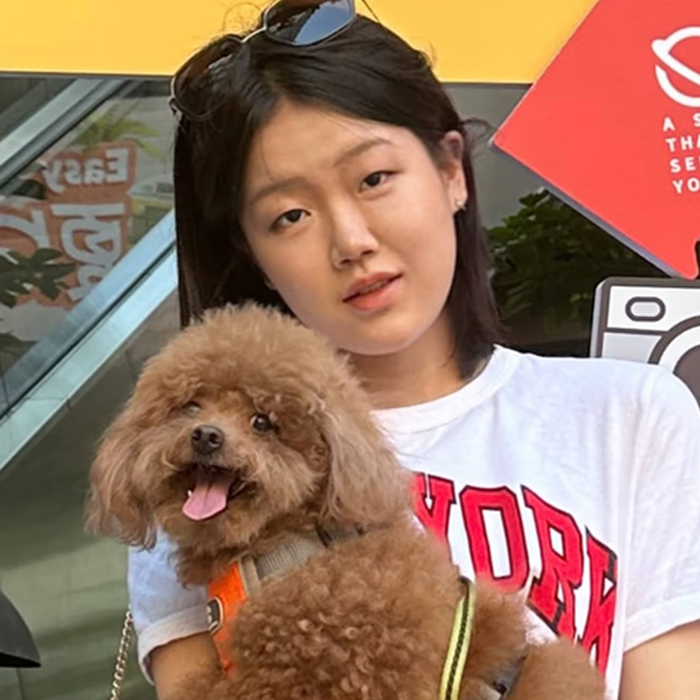

Interviewing Crystal:
Interviewing ArtCenter IxD students
Crystal (Ruoyan Wang) is a Term 6 Interaction Design student from Beijing, China, planning to graduate in the summer. With an international school background, she enjoys connecting with people and is especially interested in user research, service design, and experience design. She takes a cross-disciplinary approach, drawing from psychology and business to better understand users and create meaningful, real-world impact. Outside of design, she enjoys traveling, staying active, and spending time with animals.
3/14/2026
"I'm drawn to design because it's not just about how things look, but how they work and impact people."
Interview Questions
Q: Why did you choose ACCD and IxD specifically?
A: "I chose ACCD and Interaction Design because I was initially interested in industrial or product design, but through researching portfolios and schools, I discovered interaction design and felt it fit me better. I'm more drawn to logical thinking and problem-solving than traditional art or sketching, so IxD felt like a more natural match for my strengths."
Q: How has your experience at ACCD been so far?
A: "Academically, it's pretty much what I expected. As an interaction design major, you get exposed to a lot beyond just UX and UI, like coding, physical computing, and some graphic design, which I find really interesting and valuable.
But in terms of overall college life, it felt a bit lacking. There are not many typical university facilities or a strong campus experience, so sometimes it feels more like going to work than going to school."
Q: What's been your most impactful class at ACCD?
A: "PDS classes are some of the most impactful. They're transdisciplinary studios where you work in groups with students from different majors. For example, I'm taking a sponsored studio this term with General Motors. It currently includes students from transportation, interaction design, and product design.
It's not always the most fun because the workload is heavy, but it's really valuable. You're not just learning academically, you're also dealing with real-world situations. It feels more like a job than a class, and it pushes you to think about practical factors when designing, not just what teachers expect."
Q: How have you grown since your beginning terms?
A: "PDS classes are some of the most impactful. They're transdisciplinary studios where you work in groups with students from different majors. For example, I'm taking a sponsored studio this term with General Motors. It currently includes students from transportation, interaction design, and product design.
It's not always the most fun because the workload is heavy, but it's really valuable. You're not just learning academically, you're also dealing with real-world situations. It feels more like a job than a class, and it pushes you to think about practical factors when designing, not just what teachers expect."
Q: What's been the biggest challenge in the program for you personally?
A: "My standard for what counts as good design has definitely changed over time. When I look back at my earlier projects, I can really see that growth. But because of that, I also feel like there's never a point where I'm fully satisfied with my work. Being surrounded by really talented people can sometimes make you feel stuck or unsure how to improve. What helps is looking at other people's portfolios, reviewing your own past work, and asking professors for feedback. That's been a big part of improving.
At the same time, I've learned that everyone has different opinions, so you don't have to take every piece of feedback too seriously. It's important to evaluate suggestions yourself and decide what actually helps your work. I don't think there's such thing as a perfect portfolio, even for people who seem like they have one."
Q: What advice would you give to incoming students?
A: "Try as many things as you can. Learn new tools and skills, and take advantage of the chance to explore different areas. There are a lot of studio electives, so you can take classes outside your major and figure out what you're interested in. Some people focus on graphic design, others on spatial design, so it's really about exploring.
Also, don't be afraid to make mistakes. There isn't one "right" path, so it's important to stay open and experiment. This is the time where you can take risks without worrying too much about failure."
"Take risks, embrace mistakes, and stay open to experimenting."
Q: Is there anything you're working on right now?
A: "Right now, it's mainly the General Motors project. We're designing a vehicle for Gen Z in 2035. It's challenging because time is moving so fast and technology, especially AI, is evolving so quickly that imagining what things will be like in 10 years is difficult.
Since it's my first time working on HMI design and being part of a large sponsored project, it's been a new experience. I wouldn't say I'm fully excited about it yet, because it comes with a lot of challenges, but it's definitely a valuable learning experience and the frustration is part of the process."
Some of My Work

DiDi Global Design Group UX Internship — Crystal had previously worked on

WellWire: an individual project Crystal created
Where to Find Me
https://ruoyandesign.com/
Crystal
Interviewee

Kayley
Interviewer